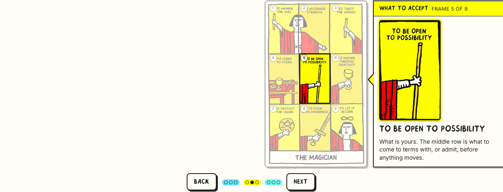
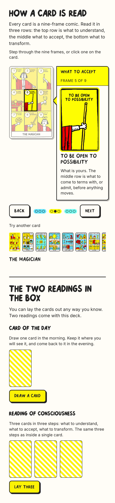
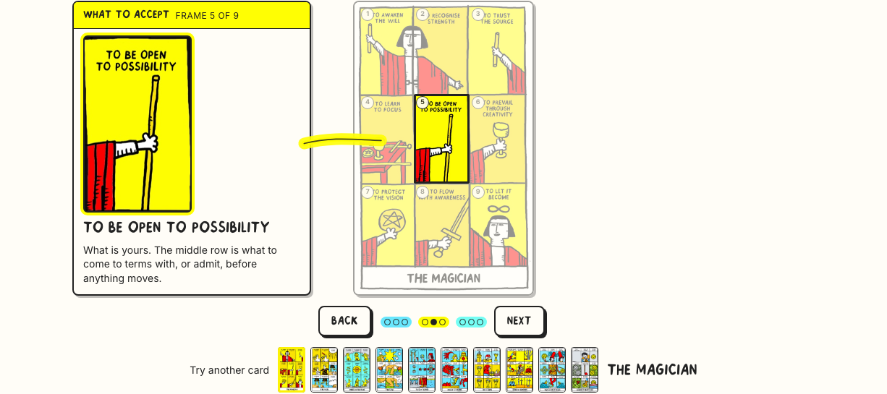
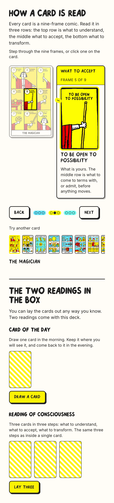
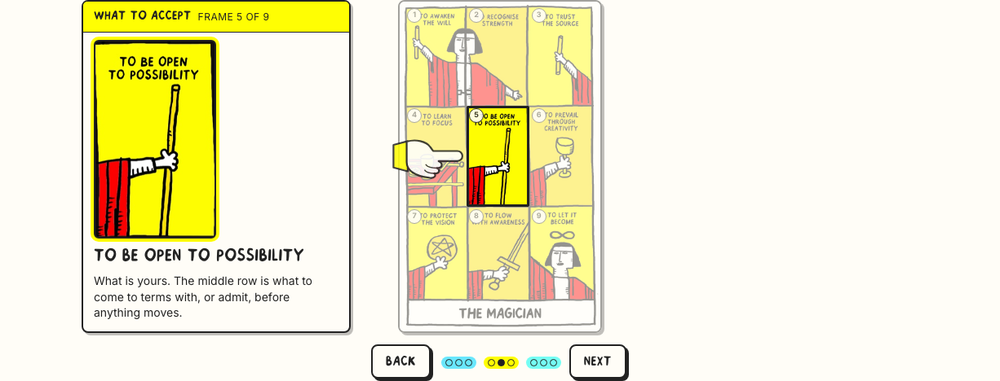
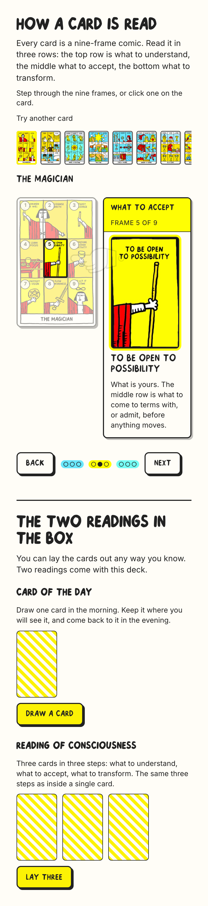

Everything that worked is untouched: the card beside the note, the enlarged frame with its explanation, the dimming and its opacity, Back / Next, "try another card". What changes in all three: the connector is redrawn from scratch, the three rows carry the deck's own colours, and the card picker sits somewhere different in each one so you can compare. Open a version and step through with the buttons or the arrow keys — the connector is measured off the lit frame, so it lands on it at any width.
Taken from the card files themselves, not chosen: these are the three most-used background colours in the deck. Note that the deck's "green" is a turquoise — there is no leafy green in the set.
The colour appears in three places at once: the note's header band, the ring around the enlarged frame in the note, and the nine step dots, grouped three by three. That last one is what makes the structure readable at a glance — three coloured clusters, not nine identical dots.
The note is pressed against the card like a bookmark pushed into it. A tail on the note's edge slides up and down to sit exactly on the lit frame's row — nothing is drawn across a gap, because there is no gap. The note always stays on the right. Picker: directly under the card, with the card's name.


A marker stroke in the row's colour sweeps out of the note and stops where the frame begins, with a fine pen line through it so it stays visible where it crosses the card. It draws itself in 300ms. The note alternates sides. Picker: on the control bar, with Back / Next — one row for everything you can do.


Ink dots run from the note and end in a pointing hand — the printer's manicule, in the deck's own white glove with an ink outline and a cuff in the row's colour. The fingertip sits five pixels off the lit frame. When the gap is too short for dots, the hand points on its own. Picker: up in the header, under the intro, before the card.


| 1 · docked note | 2 · highlighter | 3 · hand | |
|---|---|---|---|
| 1440 × 900 — two readings start at | 778px | 772px | 772px |
| 390 × 844 — note ends at | 673px | 673px | 820px |
| Connector lands on the frame (vertical / horizontal error) | 2px · docked | 2.9px · 3px | 4px · 5.5px |
| Layout shift over six steps | 0.000 | 0.000 | 0.000 |
| Nothing past the content edge · no horizontal scroll | pass | pass | pass |
| Palette: ink, paper, yellow + the three artwork colours | pass | pass | pass |
| Keyboard: arrows step, names on focus in the picker | pass | pass | pass |
| Reduced motion: the connector appears without drawing | pass | pass | pass |
| Chromium + WebKit, EN + SK, no console errors | pass | pass | pass |